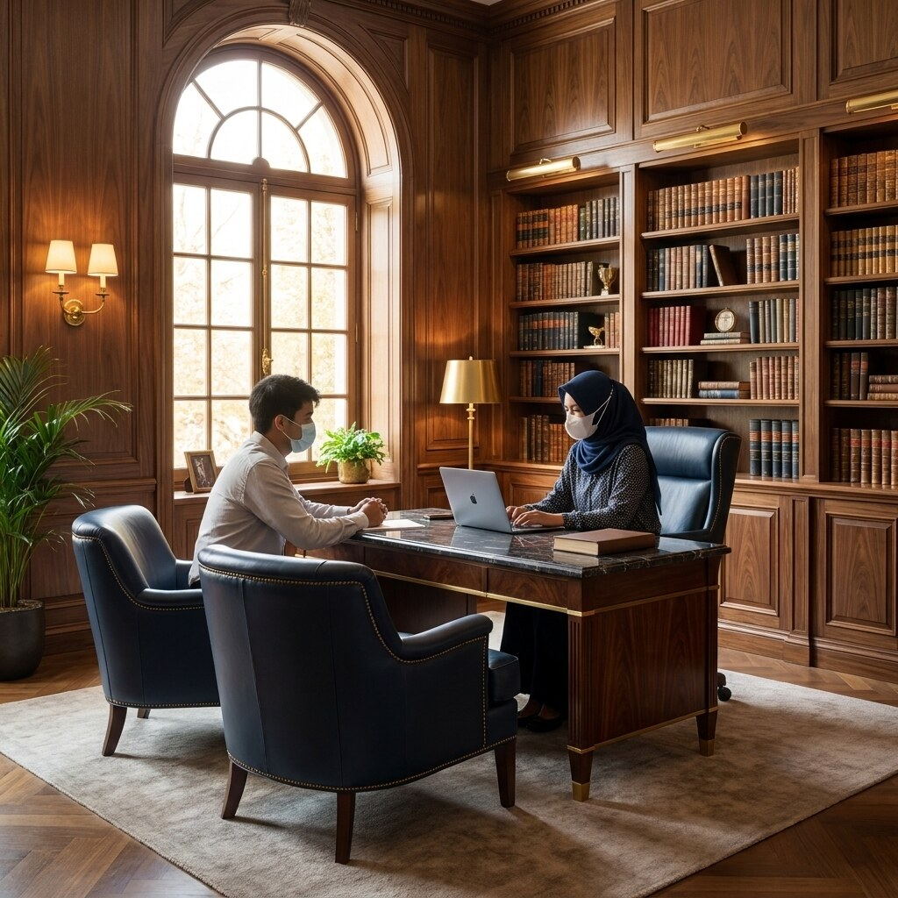
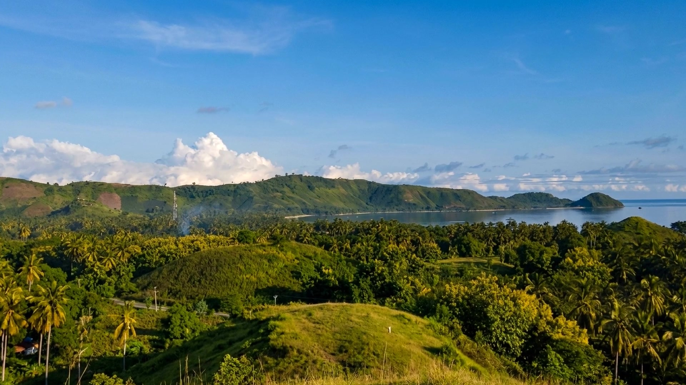
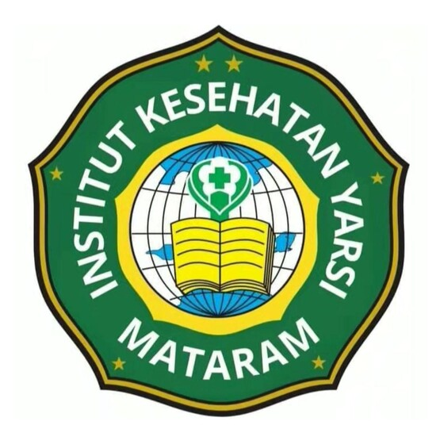

Galeri KLI
Ruang, orang, dan semangat belajar.
Jelajahi suasana yang membentuk pengalaman belajar KLI—dari konsultasi awal, pendampingan tutor, hingga inspirasi Lombok yang menjadi akar perjalanan kami.




Galeri KLI
Jelajahi suasana yang membentuk pengalaman belajar KLI—dari konsultasi awal, pendampingan tutor, hingga inspirasi Lombok yang menjadi akar perjalanan kami.


